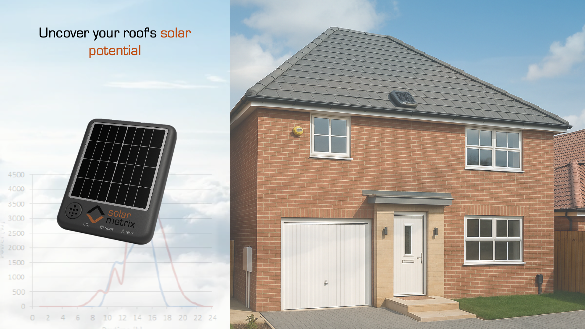
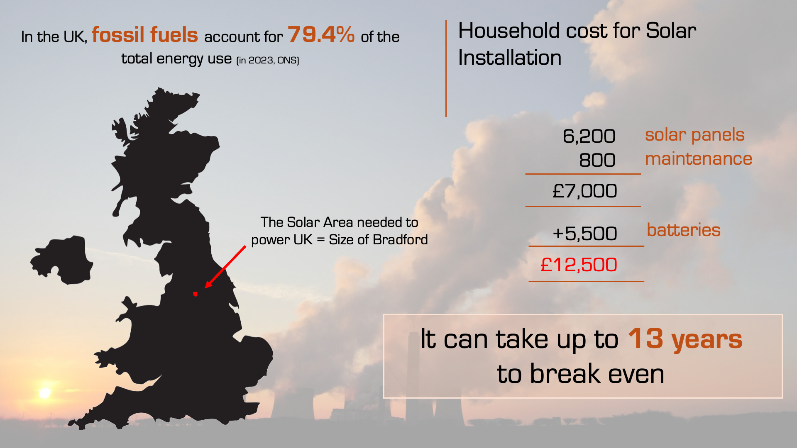
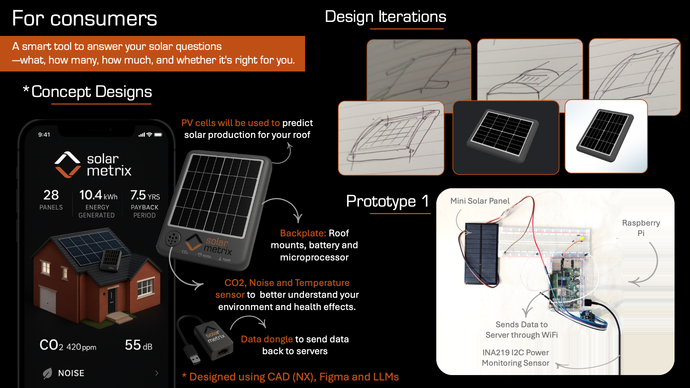
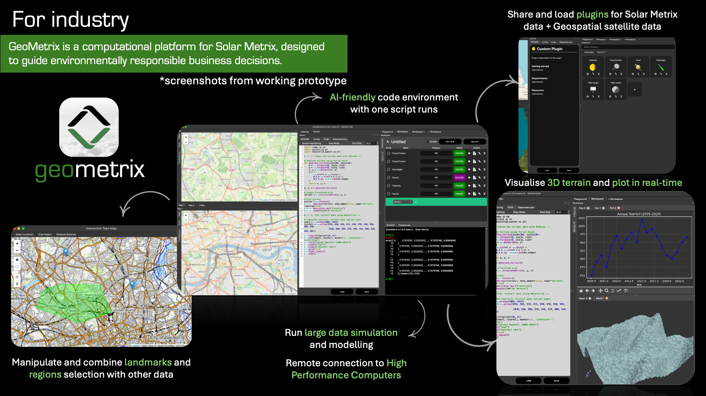
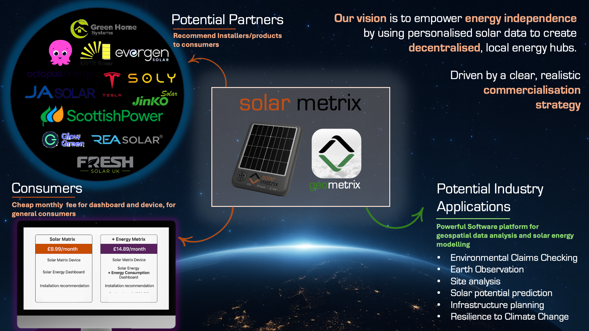

tinkering around
< |
Solar Metrix
June 2025 | Uncover your roof's solar potential
Resources
What it does
Solar Metrix: A smart device and dashboard that helps you understand your roof’s solar potential before you commit:
predicting energy output, optimal panel setup and break-even time, while monitoring your environment, including CO₂
levels and noise pollution.
This technology is at the prototype stage, developped alongside Renush Vigneswaran.
This technology is at the prototype stage, developped alongside Renush Vigneswaran.

How it works
The device contains a small, low-cost solar panel that measures power output.
This data is calibrated with satellite data from the European Space Agency to estimate your
solar potential based on location. The system calculates how many panels you’d need to meet a
chosen percentage of your energy demand; whether that's 100%, partial coverage, or battery-supported.
These options are presented through an interactive, visual dashboard that avoids technical jargon.
The device is housed in an environmentally friendly casing, with a microprocessor that streams live
data to a server, plus sensors to monitor CO₂, temperature, and noise pollution. It’s also designed
for easy roof mounting, with an adjustable panel angle for accurate simulation. Alongside the device,
we developed GeoMetrix; a simulation platform that validates our models and can be used by researchers,
industry, or the government for large-scale geospatial analysis & climate action.

Design process
We began with desk research and user interviews of homeowners, renters, and recent adopters
to understand barriers to rooftop solar adoption. Most people found it expensive, confusing,
and risky, but said they’d consider it if given clear, personalised data on savings and ROI.
This inspired our concept: an affordable, easy-to-install device that simulates solar
performance. We explored options like wide-angle cameras, irradiance sensors, and various
PV sizes before settling on a small panel; cost-effective and accurate when paired with
software calibration. Tilt angle proved important, so we integrated a tiltable PV panel
into the casing to maintain easy mounting. Our first prototype used a breadboard,
Raspberry Pi, power sensor, and a spare PV panel, all housed in a plastic Tupperware box
and located on the balcony. It streamed power data every minute to my laptop.
While raw data was limited, combining it with satellite data and calibrating it through
an AI model greatly improved accuracy and location-based estimates.
After several iterations, we landed on a minimal, lightweight, 3D-printable design using
Siemens NX. The dashboard interface was built in Figma Design Tool. This became Solar
Metrix; a tool to help people understand their solar potential before they commit.


How is it different
This is the first product to offer isolated solar monitoring specifically designed for
everyday consumers, rather than for industry or research use. By combining a small PV
panel with data engineering techniques, we interpolate performance to estimate full
rooftop output, avoiding the need for expensive industrial tools such as Aurora Solar
(£220/month) or Kipp & Zonen pyranometers (up to £5,000). Unlike most online simulators
that rely solely on satellite data, and can suffer from low accuracy and resolution,
this system calibrates satellite input with real roof-level data, significantly improving
prediction accuracy. Once installed, the device can operate for 30–40 hours on battery
(using a Pi Zero W), recharging itself via its integrated PV panel and requiring minimal
maintenance. Users receive averaged hourly solar insights, supporting reliable system
sizing and installer recommendations.
Future plans
Our vision is to enable decentralised energy hubs, where individuals can produce, use,
and sell their own solar energy. Solar Metrix acts as the gateway; delivering accurate,
personalised data and removing technical barriers to adoption. By providing recommendations
for full PV system setups, we create a high-intent user base, giving us commercial leverage
with installers and encouraging greater transparency and fairer pricing. As adoption grows,
we envision smart microgrids and local energy-sharing communities, paving the way for
peer-to-peer trading, shared battery systems, and new green business models powered by
real user data.

Submissions
This project was submitted as part of the James Dyson Awards Competition.